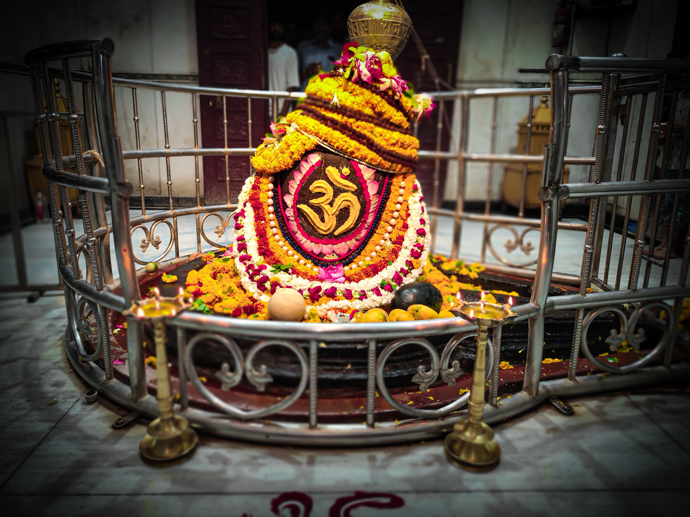
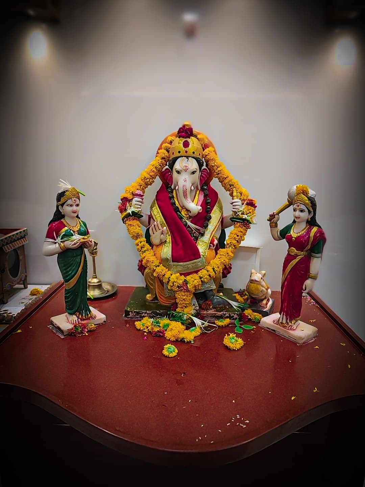

Temple Darshan
5:00 AM - 11:00 PM
Daily, all days
Temple remains open throughout the day for devotees.ॐ नमः शिवाय ||
Know the spiritual identity of Shri Rajrajeshwar Temple, its Swayambhu Shivlinga, festivals and visitor guidance.
शिवो भूत्वा शिवं यजेत् ||
Shri Rajrajeshwar Temple stands as the revered Gram Devta of Akola, with a magnificent history spanning 500 to 700 years. This ancient temple houses a self-manifested Swayambhu Shivlinga, making it one of the most sacred and beloved Shiva temples in the region.
Legend speaks of a queen who discovered this divine site, and its connection to the historic Akola Fort adds to its cultural significance. The temple's underground chamber, known as the bhuyar, is believed to have been revealed through divine intervention, bringing devotees closer to the sacred Shivlinga that continues to bless them today.
The temple serves as a spiritual beacon, especially during auspicious occasions like Mahashivratri and Shravan Somvar, when thousands of devotees gather to seek Lord Shiva's blessings through darshan, abhishek, aarti and prayer.

प्रातः काले च संध्यायां शिवलिंगं नमाम्यहम् ||
Daily, all days
Temple remains open throughout the day for devotees.हर हर महादेव ||
The most sacred night of Shiva worship, marked with special abhishek, prayers, aarti and deep devotion.
Every Monday of Shravan carries special importance, bringing devotees together for offerings and Lord Shiva's blessings.
A devotional tradition of offering holy water to Lord Shiva with faith, discipline and surrender.
